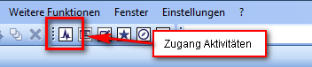

Systemzugänge¶
Windows-Client¶

Starten der Aktivitäten aus der Toolbar des Windows-Clients.
Klicken Sie in der Toolbar auf das Symbol Aktivitäten. Die Anwendung Aktivitäten wird in einer neuen Registerkarte des Ansichtsbereichs geöffnet.
Web Browser¶
In der Weboberfläche werden die Aktivitäten als Startseite nach dem Login angezeigt. Wenn Sie eine Detailansicht oder die Suchseite geöffnet haben, gelangen Sie zu den Aktivitäten über die Schaltfläche Home im Navigationsbereich.
Infodialog des Windows-Clients¶
Im Infodialog des Fachobjekts werden in der Registerkarte Aktivitäten die zugehörigen Beiträge und Meldungen angezeigt. Auf diese Weise können Sie auch Aktivitäten sehen, die Sie nicht explizit abonniert haben.
Detailansicht in der Weboberfläche¶
Die Detailansicht in der Weboberfläche enthält einen reduzierbaren Bereich Aktivitäten des Fachobjekts.